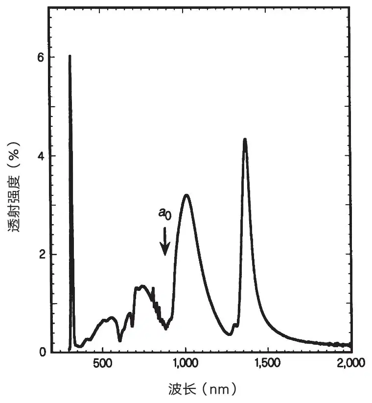
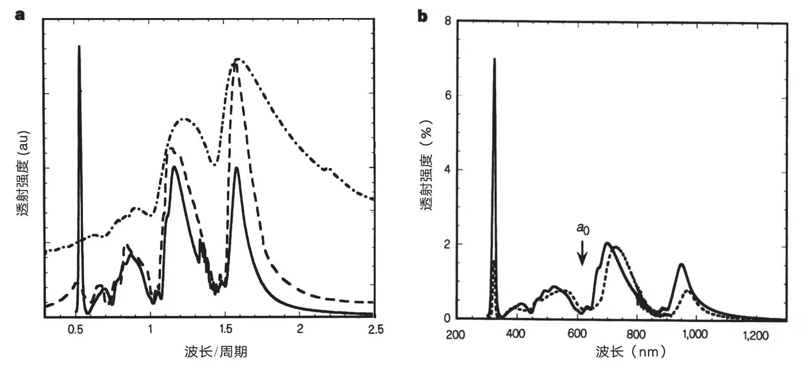
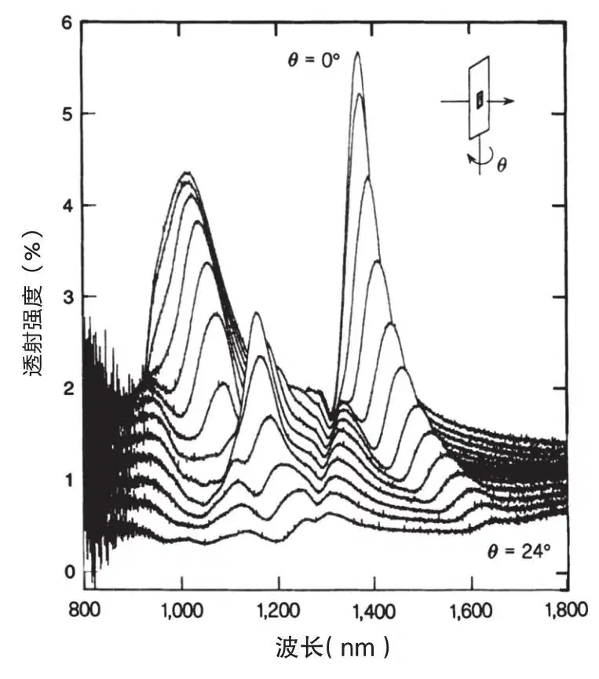
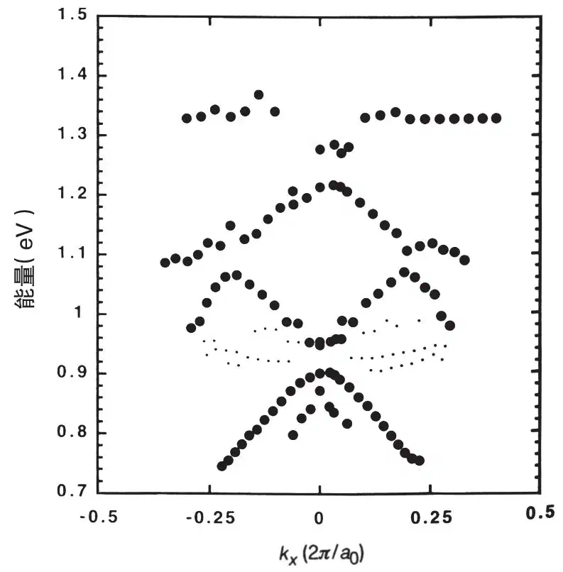

英文
英文埃贝森等
编者按
一般认为，当孔径小于光束波长时，光线将被阻碍，从而使光学显微镜的分辨率受到限制。但在本文中，普林斯顿日本电气公司研究所的托马斯·埃贝森及其同事报道了光具有“挤过”金属薄膜中亚波长尺寸孔洞阵列的惊人能力。该效应源于光与金属表面可迁移电子间的相互作用，使其激发成为与等离子体激元类似的波的运动。等离子体激元波可以通过孔洞，进而在远端发生光的再辐射。本文诱发了对目前名为等离子体光子学领域的兴趣，该领域旨在利用光–等离子体激元来实现包括“隐形盾”在内的一系列不寻常的效应。 英文
通过与控制固体中电子类似的方式来应用和控制光子的愿望，激起了人们对于光定域化、微腔量子电动力学和近场光学等主题的强烈兴趣[1-6]。调制光时遇到的基本限制就是当孔隙小于入射光子波长时透射率将非常低。但是，在探索金属薄膜中亚微米级圆柱形谐振腔的光学性质时，我们发现，当波长大于阵列周期时，这些孔洞阵列呈现出极不寻常的零级透射光谱（入射光与所探测的光二者共线），并且没有发生衍射。更为特别的是，在波长为圆柱直径的10倍处观测到尖锐的透射峰。而且在极大值处透射率可以超过1（按孔面积归一化后），这比标准孔隙理论的预期值高出几个数量级。我们的实验为下列说法提供了证据：这些不寻常的光学性质源自有周期性排列孔洞的金属薄膜表面上光与等离子体激元的耦合——电子激发作用。以透射作为光线入射角函数的观测获得了光子带图。这些发现可能会在新型光子器件中获得应用。 英文
在这项研究中，我们制备了具有多种二维阵列的圆柱形谐振腔的金属薄膜，并对实验结果进行了分析。典型的一例是，首先通过蒸镀在石英基质上沉积一层t=0.2 μm厚的银膜。继而用Micrion聚焦离子束系统9500（50 keV镓离子，5 nm标称点直径）进行溅镀，并在薄膜上加工出圆柱形孔洞阵列。单个孔直径d在150 nm到1 μm之间，孔洞之间的距离a0（亦即周期）则在0.6 μm和1.8 μm之间。零级透射光谱——其中入射光和所探测的光共线——是用一台具有非相干光源的Cary 5型紫外–近红外分光光度计记录的，也用相干光源对光具座上的阵列就透射、衍射和反射性质进行了研究。 英文
图1显示了在200 nm厚的银膜中，周期a0为0.9 μm的150 nm孔洞方形阵列典型零级透射光谱。光谱呈现出很多不同的特征。在波长λ=326 nm处可以看到本底银狭窄的等离子体峰，当薄膜厚度增加时它会消失。最值得关注的部分是在波长较长处逐渐变强的一组峰，甚至增加到超过位于周期a0处的最小值。在 处有一个额外的最小值，它对应于金属–石英界面（其中ε是基质的介电常数）。在处，阵列和单个孔洞都没有产生衍射。如同预期的那样，当波长由低处趋近周期值时，可以看到一级衍射点随之掠向表面（即衍射角接近90°）的现象（实际上，它可能增强我们在下面段落中将要讨论到的耦合作用）。最大透射强度出现在1,370 nm处，这一波长大约是阵列中单独一个孔洞的直径的10倍。更令人吃惊的是绝对透射率——由光的透射部分除以孔洞占据的表面积即可算出——在最大处≥2。换句话说，透射出的光强比直接撞击孔洞的光强要高出一倍以上。此外，阵列的透射率随着孔洞表面积呈线性变化。如果考虑到贝特[7]关于单个亚波长孔道透射率与（r / λ）4成比例的推断——其中r是孔洞半径，这一点就更加值得注意；据此推断，对于直径150 nm的孔洞来说，可以预期具有10－3数量级的透射率。另外，预期光栅产生的零级透射强度（I）会在较大波长（I∝λ－1）处单调地下降（参考文献8）。因此我们的结果必然意味着阵列本身就是一个有源元件，而不只是入射光束路径上的一个无源几何体。 英文
处有一个额外的最小值，它对应于金属–石英界面（其中ε是基质的介电常数）。在处，阵列和单个孔洞都没有产生衍射。如同预期的那样，当波长由低处趋近周期值时，可以看到一级衍射点随之掠向表面（即衍射角接近90°）的现象（实际上，它可能增强我们在下面段落中将要讨论到的耦合作用）。最大透射强度出现在1,370 nm处，这一波长大约是阵列中单独一个孔洞的直径的10倍。更令人吃惊的是绝对透射率——由光的透射部分除以孔洞占据的表面积即可算出——在最大处≥2。换句话说，透射出的光强比直接撞击孔洞的光强要高出一倍以上。此外，阵列的透射率随着孔洞表面积呈线性变化。如果考虑到贝特[7]关于单个亚波长孔道透射率与（r / λ）4成比例的推断——其中r是孔洞半径，这一点就更加值得注意；据此推断，对于直径150 nm的孔洞来说，可以预期具有10－3数量级的透射率。另外，预期光栅产生的零级透射强度（I）会在较大波长（I∝λ－1）处单调地下降（参考文献8）。因此我们的结果必然意味着阵列本身就是一个有源元件，而不只是入射光束路径上的一个无源几何体。 英文

图1．一个银阵列（a0=0.9 μm，d=150 nm，t=200 nm）的零级透射光谱 英文
为理解这种现象的来由，我们检测了它对于诸如孔洞直径、周期、金属膜厚度和类型等所有可能变量的依赖性。由于本快报篇幅有限，无法描述所有实验的细节，因此我们总结了观察结果并说明了决定这些光谱的形状的一些关键因素。首先，阵列的周期决定了峰的位置。如图2a所示，最大值的位置严格地与周期成比例，而不依赖于所用金属（银、铬、金）、孔洞直径和薄膜厚度。峰的宽度显然强烈地依赖于圆柱形谐振腔的纵横比（t / d，或厚度除以直径）（图2a）。当t / d=0.2时，峰很宽而且刚刚可以分辨出来，而当该比值达到约1时具有最高清晰度。进一步的变窄可能和单个孔洞的性质有关。图2b中显示出光谱对于薄膜厚度的依赖性，其中银膜厚度分别为0.2 μm和0.5 μm。本底等离子体激元峰的强度在这个范围内快速下降，而较长波长处的峰强度随着厚度变化大致呈线性下降。光谱随着栅格类型——例如阵列究竟是方形还是三角形栅格——发生显著变化。 英文

图2．参数对于零级透射光谱的影响。a，作为λ / a0的函数的各种方形阵列的光谱。实线：银，a0=0.6 μm，d=150 nm，t=200 nm；虚线：金，a0=1.0 μm，d=350 nm，t=300 nm；点划线：铬，a0=1.0 μm，d=500 nm，t=100 nm。b，只有厚度不同的两个相同银阵列的光谱。实线：t=200 nm；虚线：t=500 nm（为便于比较，此光谱已乘以倍数1.75）。对两个阵列同时有：a0=0.6 μm；d=150 nm。 英文
将这种现象与表面等离子体激元（SP）联系起来的两条重要线索来自下面的观测结果。其一是，由锗薄膜加工制成的孔洞阵列中不存在透射增强现象，表明了薄膜金属的重要性。另一条线索是在金属样品中光谱的角度依赖性。如图3所示，即使角度变化很小时，零级透射光谱也会发生明显的变化。图3是角度间隔为2°时记录下来的光谱。谱峰强度发生变化，并且分裂成向相反方向移动的新谱峰。这正是光与反射光栅中表面等离子体激元耦合时观测到的行为[9-14]。表面等离子体激元是金属界面上表面电荷的振荡，当它们的动量与入射光子以及光栅的动量满足如下表达式时将受到激发：
ksp= kx±nGx±mGy
其中ksp是表面等离子体激元波矢，kx=（2π / λ）sinθ是入射光子波矢在光栅平面内的分量，而Gx=Gy=2π / a0是方形阵列的光栅动量波矢。因此，如果入射角θ变化，入射辐射将激发不同的表面等离子体激元模式；通过记录作为kx的函数的峰值能量，我们得到了图4中所显示的色散关系。这幅图揭示了二维阵列中表面等离子体激元的带结构，而且它清楚地阐明了具有约30 meV到50 meV能量的带隙的存在；它们来源于表面等离子体激元与栅格相互作用导致的简并提升。色散曲线的外推得到在k轴上的截距，其数值在依据周期（2π / a0）预期的实验误差（约10%）之内。如同预期，图3和图4中的结果也对极化很敏感，但是由于金属薄膜中晶粒内在结构间的差异，目前还不能做出明确的归属。 英文

图3．作为光线入射角函数的零级透射光谱。对一个方形银阵列每隔2°测一次谱图，一直测到24°（a0=0.9 μm，d=150 nm，t=200 nm）。为清晰起见，各个谱之间在垂直方向上错开0.1%。 英文

图4．沿阵列[10]方向的色散曲线（实心圆点）。这些曲线是利用图3中透射峰的能量得到的。动量kx位于阵列平面内，由kx=（2π / λ）sinθ给出，其中θ是光束的入射角（单位归一化为2π / a0）。由较小的点组成的曲线所对应的峰，其幅度要弱很多，由于随动量变化发生的偏移并不明显，因此与带结构的关联不能确定。 英文
在我们的实验中，光与表面等离子体激元的耦合是在透射中而不是在反射中观测到的，这与此前对反射光栅上的表面等离子体激元的研究相反。在那些研究中，光与表面等离子体激元的耦合是作为强度在不同衍射级之间的重新分配观测到的。即使是在洛赫比勒对线光栅的透射研究中[15]，表面等离子体激元的影响也是通过零级透射光中的凹陷观测到的。关于线栅的红外性质，已经有大量文献表明它有一个以λ≈1.2a0为中心的宽透射；可以用类似于电路的感应效应对此进行解释[16,17]。我们的结果表明，由于光与亚波长孔洞二维阵列的表面等离子体激元耦合，透射光将明显增强。此外，我们的结果还指出了很多用现有理论无法解释的独特性状。位于金属–空气界面上的表面等离子体激元模式明显不同于位于金属–石英界面上的。但是，无论是从金属一侧还是石英一侧对样品进行光照，所得光谱都是一样的。目前，我们还不了解导致孔洞透射效率大于1的前后表面上等离子体激元之间耦合的详细机制。厚度依赖性（参见图2b）意味着孔洞对于调制这类耦合起着重要的作用，也意味着通过孔洞中的强烈散射，非辐射表面等离子体激元模式将转化为辐射模式。 英文
在光子带隙阵列中[2,4]，材料在除去能隙中的能量之外的所有波长处都是无源、半透明的。在当前的阵列中，材料起到有源的作用（通过等离子体激元），并且在除去发生耦合的那些波长之外的所有波长处都是不透明的。这两种现象的结合或整合可能产生无论从基础原理还是技术性角度来讲都极为有趣的光学特性。光能有效地透过比波长小很多的孔洞并突破孔洞间衍射的限制，对这一点的证明可以对诸如新型近场扫描光学显微镜[6]或者亚波长光刻法的设计等有所启发。对这些结果的理论分析可能会有助于对这种超强透射现象有更深入的理解。也许只有到那时我们才有望掌握这些发现的全部意义。 英文
（王耀杨 翻译；宋心琦 审稿）